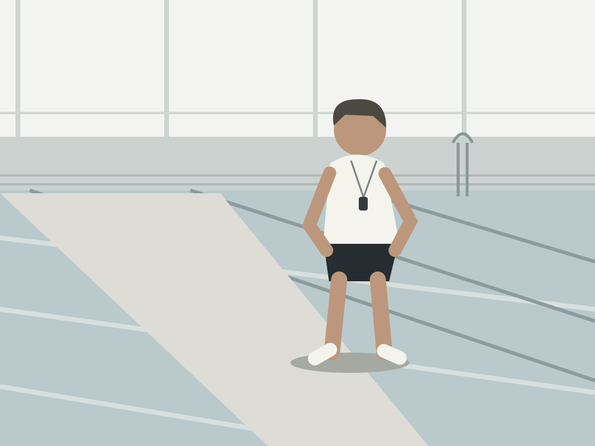

Ages 4–15 — water safety, stroke technique, and water confidence built through structured progressive lessons.
$55 / sessionTrainSwimWin.
PRIVATE COACHING
AUSTIN, TEXAS
TECHNIQUE FIRST.

Private swimming coaching for all ages and goals. 12 years of technique-first instruction — from first stroke to race day.
- Students coached
- 500+
- Years experience
- 12
- Average rating
- 4.9
Supplied fictional figures and experience, not verified evidence.
Programs
View all →Starting from zero — floating, breathing, and all four strokes in a judgment-free, patient environment.
$65 / sessionFor swimmers who know the basics but want real technique improvements and better splits.
$70 / sessionRace starts, turns, splits, and strategy — for club and high school swimmers chasing faster times.
$90 / sessionOcean and lake swimming fundamentals — sighting, drafting, and pacing for triathletes and ocean swimmers.
$80 / sessionFully personalized sessions — video analysis, custom training plan, and undivided coaching attention.
$110 / sessionSelect a program to see its notes in your trial draft. Illustrative rates; confirm a quote, availability and suitability directly.
About
Technique first.
Results always.
Former collegiate swimmer and 12-year USA Swimming certified coach. I've worked with children finding their confidence in the water, adults who never had lessons, and competitive swimmers training for their personal bests. Every session starts with where you are right now.
- USA Swimming Level 4 Certified Coach*
- Video stroke analysis every session*
- Kids, adults, and competitive swimmers
- Flexible morning and evening scheduling*
- Indoor heated pool — year-round availability*
*Supplied fictional credentials and service claims. Not verified. “Results always” is brand copy, not an outcome or water safety guarantee.
Book Your First SessionHow it works.
Simple process, no commitment until you're ready.
Choose a program
Pick what fits your goal, or ask which starting point makes sense.
Book a free trial
A sample complimentary 30-minute assessment. This demo creates no booking.
Get your assessment
Discuss your current level, stroke mechanics and goals with the coach.
Train and improve
Regular sessions build on the last. Progress is individual.
What students say.
Supplied fictional testimonials, not verified results or a promise of improvement.
★★★★★“I had a fear of water my entire adult life. After 8 sessions with Maya, I swam my first full lap without stopping. The patience and progression of the lessons made all the difference.”
Rachel M.Adult Beginner
★★★★★“My son went from splashing around to swimming butterfly in under 3 months. The technique-first approach really shows — his club coach noticed the difference immediately.”
James T.Kids Program Parent
★★★★★“I've been swimming for years but always had a weak freestyle turn. Two sessions of focused race-prep work and I knocked 1.8 seconds off my 100m. Genuinely remarkable coaching.”
Chris D.Competitive Prep
Straightforward pricing.
No contracts. No joining fees. Book a single session or a package.
Group
$45/session
Small group sessions with shared focus time.
- Groups of up to 4 swimmers
- 45-minute structured session
- Beginner and intermediate levels
- Weekly recurring slots
Private · from
$75/session
One-to-one sessions tailored to your goals.
- Sole focus for the full session
- 60 minutes per session
- All levels, all ages
- Video analysis available
- Custom training plan
Package
$650/10 sessions
Save $100 versus ten sample $75 sessions.
- Any program mix
- 12-month validity
- Free video analysis session
- Flexible scheduling
Sample package rates and program rates differ in the original brief. A real quote is needed. No checkout or payment is available.
How does the free trial work?
A complimentary 30-minute in-water assessment reviews your level and goals, with no obligation or payment. This is a concept offer; the local form below only previews an enquiry.
What age groups do you coach?
Swimmers from age 4 through adult, including junior and masters competitors. Parents or guardians should make enquiries for children.
Where do sessions take place?
A heated indoor 25-metre pool in central Austin, TX, with morning and evening slots. Exact address would be shared after a real booking. No venue or availability is verified here.
Do I need my own equipment?
The brief includes pull buoys, kick boards, fins and paddles. Bring a swimsuit, goggles and towel. Confirm equipment and access with the operator.
How often should I train to see results?
The concept suggests 1–2 sessions weekly, or 2–3 for competition. A qualified coach should agree a realistic schedule with you. Progress varies; online copy is not a training prescription.
Can I buy sessions as a gift?
The supplied concept includes gift sessions. Email the coach to discuss options. This site issues no voucher and accepts no payment; avoid sending another person's private details without permission.
Start with a conversation
Find your
first stroke.
A browser-only trial enquiry. Adult or guardian contact only. No child names, health details or payment information.
Choose a program to review its focus.
No data is stored or sent. Email and phone below are supplied placeholders.